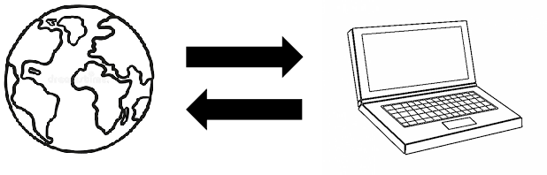
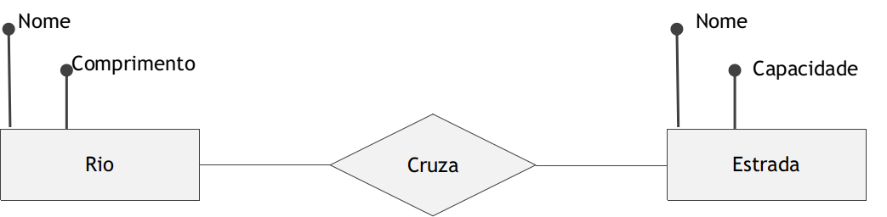
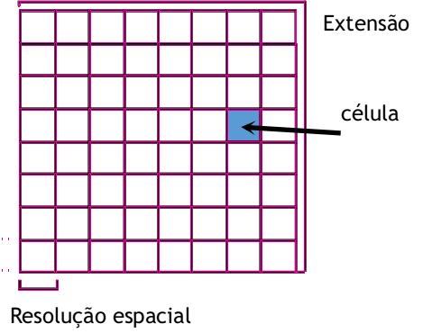
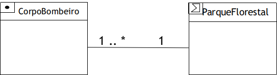

Projeto de Banco de Dados Geográficos¶
Aqui é importante diferenciar o uso pessoal do uso institucional de sistemas de informação geográfica. No uso pessoal e em casos simples, muitas vezes não é necessário um banco de dados geográfico: trabalha-se com poucos dados, em alguns arquivos shapefile. Em ambientes corporativos e institucionais, porém, o volume de dados pode ultrapassar vários gigabytes — excedendo em muito o limite de um shapefile (2 GB por arquivo) —, e os mesmos dados são acessados por vários usuários, para diferentes usos. Nesses casos, projetar um banco de dados geográfico se torna fundamental.
🌍 Do mundo real ao computador¶
Projetar um banco de dados é representar o "mundo real" por meio de estruturas computacionais — tanto para dados convencionais quanto para dados geográficos.

Um modelo de dados é uma descrição dos tipos de informação armazenados em um SGBD (HEUSER, 2009): uma descrição formal da estrutura de um banco de dados, também chamada de metadados, esquema ou definição de dados.
Um exemplo sem mapas¶
Criar o modelo de dados de um grande sistema é uma tarefa complexa, que exige profissionais especializados. Vamos começar com um exemplo familiar: as informações de um sistema acadêmico — discentes, docentes, disciplinas, turmas, notas, aprovações.
Comecemos por algo ainda mais simples: o controle de notas de um professor em uma turma. Quem conhece um pacote de escritório criaria facilmente uma planilha como esta:
| Matrícula | Nome | Nota 1 | Nota 2 | Média | Reposição | Média final | Aprovado |
|---|---|---|---|---|---|---|---|
| 2018111 | João Marcos Oliveira | 5,0 | 4,0 | 4,5 | 5,0 | 5,0 | Não |
| 2018643 | Maria Antônia Silva | 8,0 | 7,0 | 7,5 | — | 7,5 | Sim |
Ao fazer isso, essa pessoa implicitamente criou um modelo de dados: definiu quais dados são relevantes para o objetivo — neste caso, apenas identificar os aprovados.
Agora imagine um centro de ensino com necessidades bem maiores: gerar o histórico de cada discente, encontrar facilmente os contatos de discentes e docentes, acompanhar mudanças na matriz curricular, gerar relatórios por turma e por docente. Uma única tabela não bastaria. Para os contatos, por exemplo, seria melhor uma segunda tabela:
| Matrícula | Nome | Endereço | Telefone | |
|---|---|---|---|---|
| 2018111 | João Marcos Oliveira | joao@exemplo.com | Rua Planejada, 123 | (98) 99999-7799 |
| 2018643 | Maria Antônia Silva | maria@exemplo.com | Rua da Esperança, 345 | (98) 98888-7996 |
Separar os contatos evita a redundância (repetição) dos dados e facilita as modificações: se um discente mudar de telefone, a atualização ocorre em um único lugar. De modo prático, modelar é decidir quais tabelas existem, como se relacionam e qual o tipo de dado de cada coluna — texto para o nome, número inteiro para a matrícula, número real para as notas.
Um mesmo problema pode ser modelado de diversas formas, algumas melhores que outras para determinados casos — o que torna a modelagem uma das tarefas mais complexas da computação. Para o geoprocessamento, porém, o usuário geralmente precisa responder a algumas perguntas:
- Qual a representação geográfica? É um geo-objeto ou um geo-campo?
- Quais atributos descrevem esses dados?
- Qual a representação computacional (tipo de dado) de cada atributo?
- Quantas classes de objetos serão representadas? Existem relações ou restrições entre elas?
🪜 Níveis e etapas do projeto¶
O projeto de um banco de dados geográfico tem muitas semelhanças com o de qualquer outro banco: envolve a criação de modelos conceituais, lógicos e físicos (LONGLEY et al., 2015), aqui organizados em seis passos:
flowchart TB
subgraph C["Modelo conceitual"]
direction LR
c1["1. Visão do usuário"] --> c2["2. Objetos e<br/>relacionamentos"] --> c3["3. Representação<br/>geográfica"]
end
subgraph L["Modelo lógico"]
direction LR
l1["4. Tipos de banco<br/>de dados geográficos"] --> l2["5. Estrutura do banco<br/>de dados geográfico"]
end
subgraph F["Modelo físico"]
f1["6. Esquema do<br/>banco de dados"]
end
c3 --> l1
l2 --> f1Observe que o nível do mundo real, comum nos livros de banco de dados, não aparece. No geoprocessamento, ele seria formado pelos fenômenos geográficos — rios, cidades, montanhas —, aqueles que, como vimos no Capítulo 1, possuem tempo e espaço bem definidos. Sem querer ser filosófico: talvez o mundo real seja intangível, impossível de ser representado computacionalmente; em muitos casos, os fenômenos são convenções e abstrações que criamos no domínio de discurso, como "o Everest" e "o Brasil". Por isso, podemos começar o projeto a partir do nível conceitual.
💭 Modelo conceitual¶
Longley et al. (2015) argumentam que a visão do usuário é o primeiro passo do nível conceitual: os dados são identificados e organizados para entender o domínio ou problema, por meio de entrevistas e da leitura de documentos e relatórios.
O segundo passo é a definição dos objetos e seus relacionamentos. Nessa etapa, usam-se diagramas simples, ainda independentes de um tipo de banco de dados — como o diagrama de entidade e relacionamento (DER):

Esses diagramas ajudam a entender o domínio, mas a última etapa do nível conceitual é escolher a representação geográfica de cada entidade. Como vimos no Capítulo 4, há duas visões:
- Objetos discretos (geo-objetos): entidades com limites bem definidos sobre um espaço vazio — como os mapas geopolíticos, cujos limites são definidos por acordos (inter)nacionais.
- Campos contínuos (geo-campos): variáveis definidas em cada posição do espaço — como as imagens de satélite, em que o sensor lê um valor de reflectância para cada posição imageada.
🧩 Modelo lógico¶
O nível lógico ajusta o modelo conceitual às estruturas de dados (LONGLEY et al., 2015):
-
Os geo-campos são geralmente implementados por estruturas matriciais (rasters), que dividem o mundo em células e especificam atributos para elas. Características importantes dessa representação são a extensão (a área coberta) e a resolução espacial (o tamanho da célula).

-
Os geo-objetos são geralmente representados por estruturas vetoriais: coleções de feições geométricas (ponto, linha, área) com um ou mais atributos associados. A componente espacial usa primitivas geométricas, associadas a dados convencionais como textos e números. Por exemplo, um mapa dos países da América do Sul, em que cada polígono está ligado a uma linha de uma tabela:
País PIB (US$ bilhões) População (milhões) Brasil 350 159 Argentina 295 34 Chile 45 14 Valores ilustrativos, extraídos do exemplo de Câmara et al. (2001).
Pictogramas¶
Definidas as estruturas, podemos incluí-las nos diagramas de entidade-relacionamento ou de classes por meio de pictogramas: pequenos ícones que indicam a forma geométrica (ponto, linha, polígono, campo) e as relações espaciais (SHEKHAR; CHAWLA, 2003). No diagrama a seguir, cada corpo de bombeiros é modelado como um ponto e está localizado em um parque florestal modelado como um polígono:

Os pictogramas tornam explícitos o formato de representação e a relação espacial.
O modelo OMT-G¶
Borges, Davis e Laender (2001) propuseram um modelo mais completo, o OMT-G, uma extensão para dados geográficos da OMT (Object Modeling Technique) de Rumbaugh et al. (1991). Nele, modelam-se dados espaciais e não espaciais por meio de dois tipos de classe:
- Classes convencionais: representadas como classes comuns (nome, atributos, operações);
- Classes georreferenciadas: têm, além disso, um espaço para um pictograma que indica a representação geográfica.
As classes georreferenciadas se especializam em geo-campos e geo-objetos, seguindo os conceitos vistos no nível conceitual:
| Especialização | Classes no OMT-G | Exemplo |
|---|---|---|
| Geo-campo | Rede triangular irregular (TIN) | Temperatura, relevo |
| Isolinhas | Curvas de nível | |
| Subdivisão planar | Mapa pedológico (tipos de solo) | |
| Tesselação | Imagem Landsat | |
| Amostras | Pontos cotados | |
| Geo-objeto com geometria | Ponto, linha, polígono | Árvore, meio-fio, edificação |
| Geo-objeto com geometria e topologia | Linha unidirecional, linha bidirecional, nó de rede | Trecho de esgoto, tubulação de água, cruzamento |
O OMT-G descreve ainda três categorias de relacionamentos:
- Associações simples — relações entre objetos de classes diferentes, convencionais ou georreferenciadas (ex.: uma edificação pertence a um proprietário);
- Relacionamentos espaciais — relações topológicas, métricas ou direcionais entre classes georreferenciadas (ex.: um lote contém uma edificação; uma escola está a menos de 1 km de um ponto de ônibus);
- Relacionamentos de rede — ligações arco-nó ou arco-arco (ex.: segmentos de logradouro ligados a cruzamentos; rodovias formando uma malha rodoviária).
Para ver os diagramas completos e sua notação gráfica, consulte o artigo original (BORGES; DAVIS; LAENDER, 2001) e o capítulo "Modelagem de dados geográficos" de Casanova et al. (2005), disponível em dpi.inpe.br/livros/bdados.
A ET-EDGV¶
Como comentamos, a modelagem exige experiência e conhecimento do domínio, e um mesmo problema pode ser modelado de muitas maneiras. Essas diferenças podem inviabilizar o compartilhamento de dados entre produtores e usuários de informação cartográfica. Por isso, a Comissão Nacional de Cartografia (CONCAR) homologou as Especificações Técnicas para Estruturação de Dados Geoespaciais Vetoriais (ET-EDGV): um modelo conceitual e semântico do mapeamento de referência brasileiro, que padroniza as estruturas de dados (DSG, 2017). A versão 3.0 da ET-EDGV define a estrutura dos dados vetoriais e tem como base o OMT-G.
A especificação contém modelos para diversas categorias — Hidrografia, Energia e Comunicações, Relevo, Vegetação, Sistemas de Transporte, Administração Pública, entre outras —, cada uma com classes e relações definidas segundo o OMT-G. Na categoria Hidrografia, por exemplo, há classes como Curso d'água, Trecho de drenagem, Barragem, Eclusa e Bacia hidrográfica, com relacionamentos espaciais como "trecho de drenagem está contido em bacia hidrográfica". A documentação completa está disponível no Geoportal do Exército Brasileiro.
🛠️ Modelo físico¶
Longley et al. (2015) destacam que o modelo físico é a definição do esquema do banco de dados usando a linguagem de definição de dados do SGBD — a SQL DDL, que veremos no Capítulo 13. É nesse nível que decidimos, por exemplo, que a classe Município será uma tabela municipio, com as colunas codigo integer, nome varchar(100) e geom geometry(MultiPolygon, 4674).
Um atalho para a ET-EDGV: o DsgTools
A Diretoria de Serviço Geográfico (DSG) do Exército disponibiliza o plugin DsgTools para o QGIS, que cria bancos de dados (PostGIS ou SpatiaLite) de acordo com a ET-EDGV — ou seja, que já fornece o modelo físico pronto.
📝 Síntese¶
- Modelar é decidir quais tabelas existem, como se relacionam e qual o tipo de cada atributo; no caso geográfico, também qual a representação geográfica de cada classe.
- O projeto passa pelos modelos conceitual (visão do usuário, objetos, representação), lógico (estruturas matriciais e vetoriais) e físico (esquema em SQL).
- O OMT-G estende a modelagem orientada a objetos com classes georreferenciadas, pictogramas e relacionamentos espaciais e de rede; a ET-EDGV padroniza, com base nele, o mapeamento de referência brasileiro.
✏️ Exercícios¶
- Explique a diferença entre os modelos conceitual, lógico e físico. Em qual deles se decide se um dado será vetorial ou matricial?
- Modele uma planilha de controle de frequência de uma turma e mostre como separá-la em duas tabelas para evitar redundância.
- Para um cadastro urbano com as classes Bairro, Quadra, Lote, Edificação e Proprietário, indique quais são convencionais e quais são georreferenciadas, e o pictograma de cada uma.
- Dê exemplos de um relacionamento espacial e de um relacionamento de rede em um sistema de saneamento.
- Qual a importância da ET-EDGV para o compartilhamento de dados geográficos no Brasil?